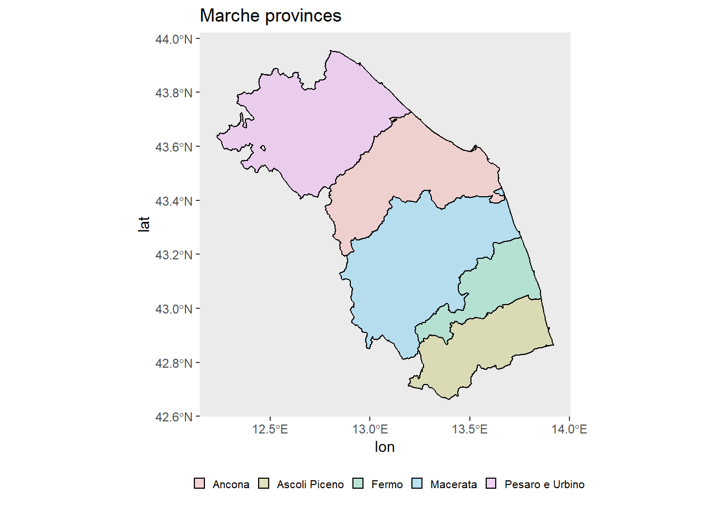
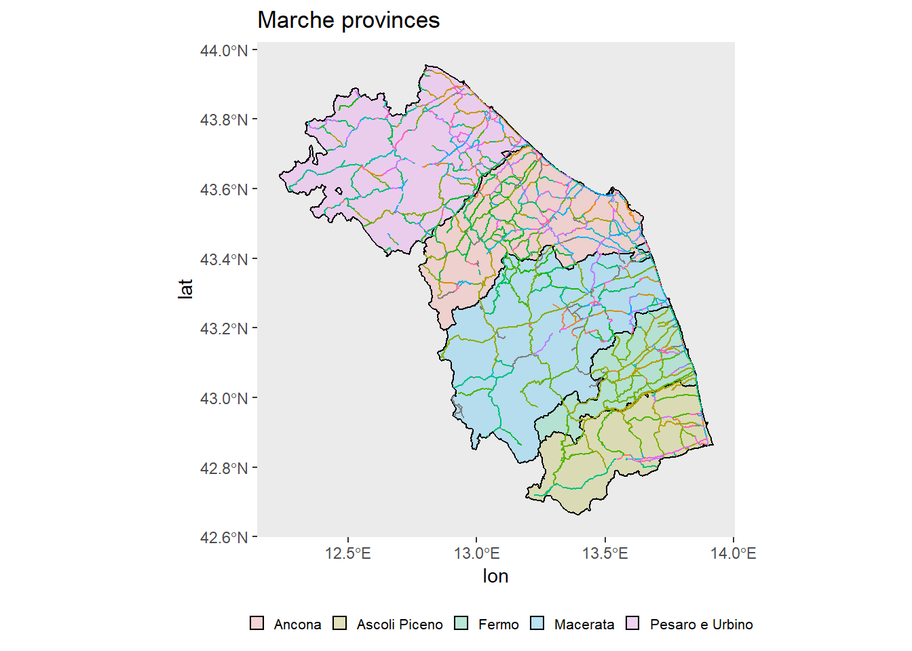

install.packages("osmdata")The osmdata package can be used to download OpenStreetMap data. OpenStreetMap is a database of crowdsourced geographic information that includes things like road networks, water features, points of interest and more. Whatever a person on the internet can map and has mapped on OSM is available for download for free. For a more detailed introduction with more exploration of the package functionalities, see the vignette.
Installing osmdata
You can install the most recent official version of osmdata from CRAN with:
Or the developer version from GitHub:
devtools::install_github("ropensci/osmdata")We start by loading the needed packages. In the following sections I’ll provide many examples on how to use osmdata to query spatial data from OSM database.
library(osmdata)
library(ggplot2)Get bounding boxes
osmdata::getbb() function uses the free Nominatim API provided by OpenStreetMap to find the bounding box (bb) associated with place names. For example:
italy_bb <- osmdata::getbb("Italy", featuretype = "Country")
brazil_bb <- osmdata::getbb("Brazil", featuretype = "Country")
list(italy = italy_bb, brazil = brazil_bb)$italy
min max
x 6.627266 18.78447
y 35.288962 47.09215
$brazil
min max
x -73.98306 -28.628965
y -33.86891 5.269581Note that I set the featuretype parameter to ‘Country’. This ensures the correct bounding boxes for the actual China and Brazil countries (and not entities with similar/same name) are retrieved. The default value of featuretype is, in fact, “settlement”, that combines results from all intermediate levels below “country” and and above “streets”. See ?osmdata::getbb() for more details, and ’Search > Parameters’ section from Nominatim API documentation for a list of available featuretype values. For example, let’s try without adding featuretype parameter :
italy_no_ft <- osmdata::getbb("Italy", format_out = "data.frame")
italy_no_ftAs you can see, there are many non-country entities that match the name ‘Italy’, like ‘Italy, Ellis County, Texas, 76651, United States’, or ‘Italy, Georgetown County, South Carolina, 29510, United States’. So, running osmdata::getbb("Italy") without featuretype = "Country" would return the wrong output.
Note:
format_out parameter lets the user choose the output format. Default format is ‘matrix’. See ?osmdata::getbb() for a list of available formats.
Overpass queries
overpass is a C++ library that serves OpenStreetMap data over the web. All overpass queries with osmdata package begin with the function osmdata::opq() . The function requires a bounding box as input (see ?osmdata::opq() for more details.
italy <- osmdata::opq(bbox = italy_bb)
italy$bbox
[1] "35.2889616,6.6272658,47.0921462,18.7844746"
$prefix
[1] "[out:xml][timeout:25];\n(\n"
$suffix
[1] ");\n(._;>;);\nout body;"
$features
NULL
attr(,"class")
[1] "list" "overpass_query"
attr(,"nodes_only")
[1] FALSEIncrease timeout and/or memsize parameters values if you get timeout and/or memory errors.
We can also filter the base, more general, query by adding OSM features, which are specified in terms of key-value pairs. We do this with osmdata::add_osm_feature() function.
italy <- osmdata::opq(bbox = italy_bb, timeout = 50000) |>
add_osm_feature(key = "admin_level", value = 4)
italy$bbox
[1] "35.2889616,6.6272658,47.0921462,18.7844746"
$prefix
[1] "[out:xml][timeout:50000];\n(\n"
$suffix
[1] ");\n(._;>;);\nout body;"
$features
[1] " [\"admin_level\"=\"4\"]"
attr(,"class")
[1] "list" "overpass_query"
attr(,"nodes_only")
[1] FALSEadmin_level key describes the administrative level of a feature within a government hierarchy. It is primarily used for the borders of territorial political entities (e.g. country, state, municipality) together with boundary = administrative. Due to cultural and political differences, admin levels of different countries only correspond approximately to each other. Here, value = 4 stands for boundaries of Italian regions.
For a list of all the available key-value pairs, see Map features page on openstreetmap website. You can also run osmdata::available_features() and osmdata::available_tags() functions. The first one returns a vector including all the available keys. The second one returns a vector including all the available values for a specific key.
keys <- data.frame(key = osmdata::available_features())
vals <- osmdata::available_tags("boundary")keysvals [1] "aboriginal_lands" "administrative" "border_zone"
[4] "disputed" "forest" "forest_compartment"
[7] "hazard" "maritime" "marker"
[10] "national_park" "place" "political"
[13] "postal_code" "protected_area" "special_economic_zone"Extracting OSM data from an overpass query
After defining a query, we download the actual data by adding a osmdata::osmdata_sf() or osmdata::osmdata_sp() call, to return the data in sf or sp format. In the following example we download the boundary of the provinces of Marche region, in Italy.
prov <- c("Ancona", "Ascoli Piceno", "Fermo", "Macerata", "Pesaro e Urbino")
marche <- osmdata::opq(bbox = getbb("Marche, Italy", featuretype = "state"), timeout = 50000) |>
add_osm_feature(key = "admin_level", value = 6) |>
add_osm_feature(key = "name", value = prov) |>
osmdata_sf()
marcheObject of class 'osmdata' with:
$bbox : 42.6871561,12.1854536,43.9715999,13.9163435
$overpass_call : The call submitted to the overpass API
$meta : metadata including timestamp and version numbers
$osm_points : 'sf' Simple Features Collection with 25472 points
$osm_lines : 'sf' Simple Features Collection with 303 linestrings
$osm_polygons : 'sf' Simple Features Collection with 2 polygons
$osm_multilines : NULL
$osm_multipolygons : 'sf' Simple Features Collection with 5 multipolygonsadmin_level=6 stands for provinces, and with name=prov we filter only the actual Marche provinces, since the rectangular bounding box defined with bbox argument also encompasses parts of other italian regions. As you can see, we got an osmdata object with many different features as output, including 5 multipolygons. Those are the polygons representing the provinces. First let’s see if those multipolygons have a defined CRS attribute (see GIS with R - Coordinate Reference Systems in R post for more details about coordinate reference systems).
sf::st_crs(marche$osm_multipolygons)$input[1] "EPSG:4326"The CRS is set to WGS84. Let’s change it to a more appropriate value. Marche region falls into UTM zone 33N, so let’s find the corresponding EPSG code with the following chunk.
crs <- rgdal::make_EPSG()
marche_crs <- crs[crs$note == "WGS 72 / UTM zone 33N", "code"]
marche_crs[1] 32233Then we run sf::st_transform() function to transform our data into the new CRS.
marche$osm_multipolygons <- sf::st_transform(marche$osm_multipolygons, crs = marche_crs)
sf::st_crs(marche$osm_multipolygons)$input[1] "EPSG:32233"Finally I provide a quick ggplot2 plot of Marche provinces.
p <- ggplot2::ggplot() +
geom_sf(data = marche$osm_multipolygons,
aes(geometry = geometry, fill = name),
colour = "black", alpha = .23) +
theme(panel.grid = element_blank(),
legend.position = "bottom",
legend.title = element_blank(),
legend.text = element_text(size = 8),
legend.key.size = unit(3, "mm")) +
labs(title = "Marche provinces", xlab = "lon", ylab = "lat")
p
Now let’s say we want to refine our osmdata query, and also download and visualize data about the primary and secondary highways in Marche region, on top of the map we just drawn. First we start by executing a new separate query.
bb_poly <- osmdata::getbb("Marche, Italy", featuretype = "state", format_out = "polygon")
highways <- osmdata::opq(bbox = getbb("Marche, Italy", featuretype = "state"), timeout = 50000) |>
add_osm_feature(key = "highway", value = c("primary", "secondary")) |>
osmdata_sf() |>
trim_osmdata(bb_poly) |>
unique_osmdata()bb_poly has more than one polygon; the first will be selected.highwaysObject of class 'osmdata' with:
$bbox : 42.6871561,12.1854536,43.9715999,13.9163435
$overpass_call : The call submitted to the overpass API
$meta : metadata including timestamp and version numbers
$osm_points : 'sf' Simple Features Collection with 1033 points
$osm_lines : 'sf' Simple Features Collection with 11111 linestrings
$osm_polygons : 'sf' Simple Features Collection with 440 polygons
$osm_multilines : NULL
$osm_multipolygons : NULL
Note:
In this case, filtering the result by the names of Marche highways is not a good solution, since there are thousands of roads. So we do a polygon filtering by defining a polygon bounding box with format_out = "polygon" and then trimming the query result with osmdata::trim_osmdata() function. I also cleaned the output from possible duplicates with osmdata::unique_osmdata() function.
Here the features of interest are the lines (‘osm_lines’). Again, we convert the data into the appropriate CRS.
highways$osm_lines <- sf::st_transform(highways$osm_lines, crs = marche_crs)
sf::st_crs(highways$osm_lines)$input[1] "EPSG:32233"In the end, we add the highways layer to the previous plot.
p_highways <- p +
geom_sf(data = highways$osm_lines,
aes(geometry = geometry, colour = name),
show.legend = F)
p_highways